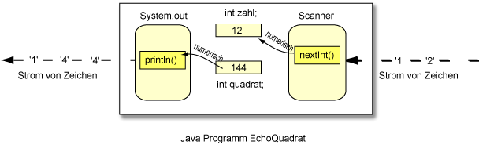

Antwort:
int
int
nextInt()
Die nextInt() Methode des Scanner-Objekts liest einen String von Ziffern (Zeichen) ein und konvertiert ihn in einen int-Typ.
Das Scanner-Objekt liest die Zeichen eines nach dem anderen ein, bis es die eingesammelt hat, die für eine Ganzzahl verwendet wurden. Dann konvertiert es die Zeichen in einen numerischen 32-Bit Wert. Üblicherweise wird der Wert in einer int-Variable gespeichert.

Die Abbildung zeigt ein Programm, das Character-Daten einliest und sie dann in eine Ganzzahl konvertiert, die in zahl gespeichert werden. Danach führt das Programm Arithmetik mit zahl durch und speichert das Ergebnis in quadrat. Letztendlich wird das Ergebnis an println gesendet, die das numerische Ergebnis in Zeichen konvertiert und sie ausgibt.
Die nextInt() Methode scannt den Input-Strom Zeichen für Zeichen und fasst Zeichen in Gruppen zusammen, die in einen numerischen Typ konvertiert werden können. Sie ignoriert führende und nachfolgende Leerzeichen.
Kann mit einem String von Zeichen Arithmetik getan werden?